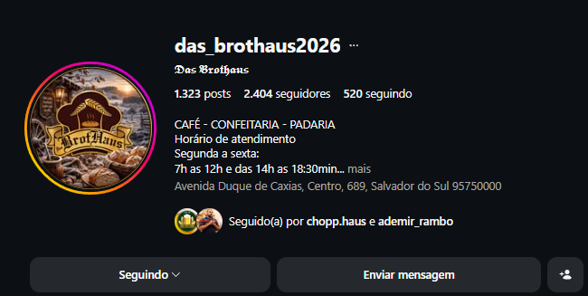

Brownies especiais
Chocolate intenso, frutas frescas e recheios cremosos.
Pães, confeitaria, cafés e sobremesas preparados para transformar uma pausa comum em um momento especial.
Receitas generosas, combinações marcantes e aquele acabamento que faz cada escolha parecer uma celebração.
Chocolate intenso, frutas frescas e recheios cremosos.
Doces delicados para a pausa ou para celebrar.
Taças, petit gâteau e combinações da casa.
Um pouco do que acontece por aqui: produção diária, variedade e muito sabor chegando à vitrine.
Na Das Brothaus, acreditamos que os melhores sabores nascem da paciência. Cada receita é preparada com bons ingredientes, cuidado artesanal e as mãos de quem ama o que faz.
Inspirados pela tradição europeia e pelo acolhimento do sul, criamos um lugar para desacelerar, conversar e aproveitar.

@das_brothaus2026 ↗